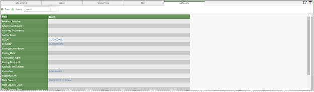

Note: Metadata fields are not display for extracted text regardless of user permissions.
The metadata view displays two columns: Field and Value. Both these columns may be sorted by clicking on the desired column heading. Column is sorted alphabetically in ascending order. When the column heading is clicked again, the column sorts in descending order.

|
|
Note: Metadata fields are not display for extracted text regardless of user permissions. |
Click  to display the Print window. Select the desired print options.
to display the Print window. Select the desired print options.
Click  to create the metadata .CSV file for export use. The metadata .CSV file contains the metadata fields and their corresponding values for the current document. All metadata fields display even in they do not contain values. By default, the metadata grid displays all the fields.
to create the metadata .CSV file for export use. The metadata .CSV file contains the metadata fields and their corresponding values for the current document. All metadata fields display even in they do not contain values. By default, the metadata grid displays all the fields.
Enter a metadata field or a metadata value in the Search box  to display only those fields and/or values in the metadata grid. For example, entering the metadata field BEG will return BEGATT, BEGDOC, PROD BEGATT, PROD BEGDOC. Click Clear next to the search box to return to the default metadata grid display.
to display only those fields and/or values in the metadata grid. For example, entering the metadata field BEG will return BEGATT, BEGDOC, PROD BEGATT, PROD BEGDOC. Click Clear next to the search box to return to the default metadata grid display.